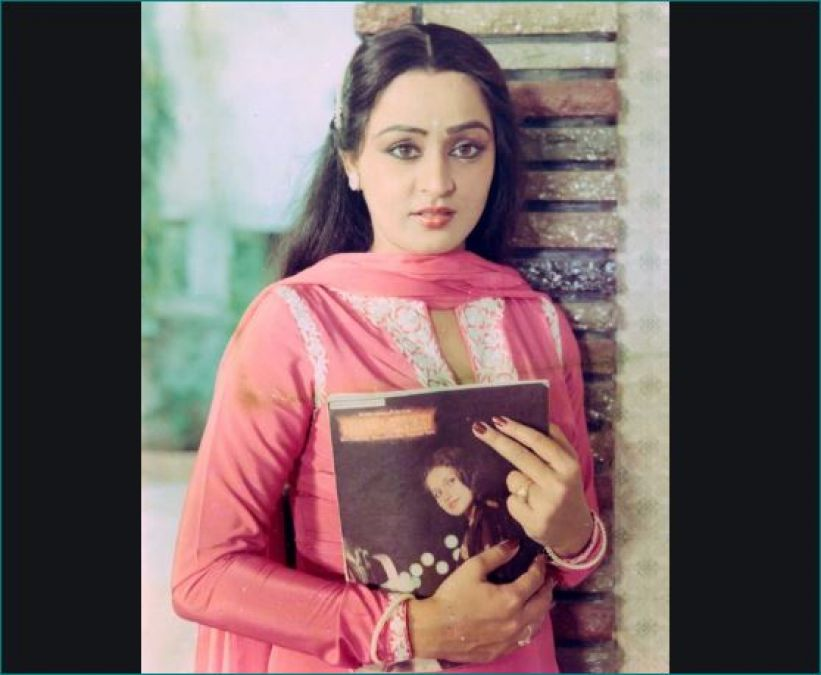
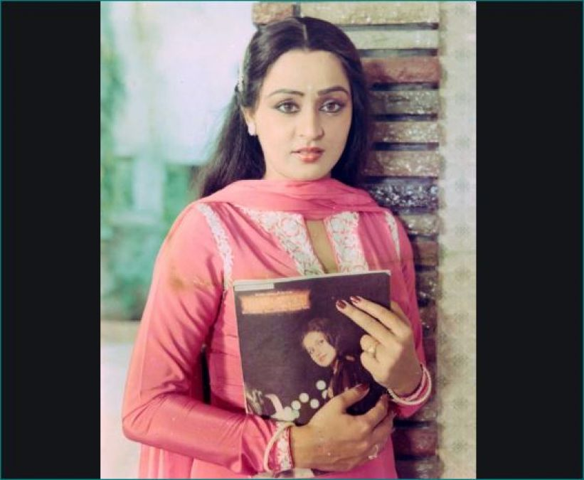

Hungama is a 2003 Indian Hindi-language comedy film directed by Priyadarshan and produced by Venus Records & Tapes. The film features Akshaye Khanna, Paresh Rawal, Aftab Shivdasani and Rimi Sen in the lead roles, while Shakti Kapoor, Rajpal Yadav, Tiku Talsania and Shoma Anand play supporting roles. It is a remake of Priyadarshan's own 1984 Malayalam film Poochakkoru Mookkuthi which itself was based on the 1980 Telugu movie Gopal Rao Gari Ammayi and the 1981 Tamil movie Kodeeswaran Magal. It was also reported to have been inspired by the plot elements of Charles Dickens's play The Strange Gentleman.
| DIRECTED BY | PRIYADARSHAN |
| WRITTEN BY | NEERAJ VORA |
| STORY BY | PRIYADARSHAN |
| EDITED BY | N. GOPALKRISHNAN |
| PRODUCED BY | BHAUMIK GONDALIYA |
| MUSIC BY | NADEEM SHRAVAN AND S.P.VENKATESH |
| DISTRIBUTED BY | VENUS ENTERTAINMENT |
| STARRING | AKSHAYE KHANNA,PARESH RAWAL,AFTAB SHIVDASANI,RIMI SEN,SHAKTI KAPOOR,RAJPAL YADAV,TIKU TALSANIA,SHOMA ANAND |
| CINEMATOGRAPHY | TIRRU |
| PRODUCTION COMPANY | VENUS RECORDS AND TAPES |
| RELEASE DATE | 1 AUGUST 2003 |
| RUNNING TIME | 146 MINUTES |
| COUNTRY | INDIA | LANGUAGE | HINDI |
| BUDGET | 6 CRORE |
| BOX OFFICE | 20.04 CRORE |
Anjali Patekar arrives in Mumbai looking for a job. She finds cheap lodging by feigning marriage to a stranger, Nandu Apte, an aspiring musician. Jitendra "Jeetu" Sahai has just started his own electronics business. His friend Anil Singh pretends to be millionaire businessman Radhe Shyam Tiwari's son and conspires with his servant Pandu to trick Kachra Seth into a quick engagement with his daughter Madhuri. At the same time, Radhe Shyam Tiwari, who lives in a village with his wife Anjali Tiwari moves to the city. With news of Radhe's arrival, Pandu asks Anil to abscond.
Anjali goes to Radhe's villa hoping for a job. At this point, Jeetu shows up at the villa to fix a stereo he sold to Radhe. Seeing Anjali at the door, he mistakes her for Radhe's daughter. Unable to land a job at the Radhe's, Anjali later bumps into Jeetu when she responds to a vacancy at his store. Already trying to woo Anjali for assuming her to be Radhe's daughter, Jeetu hires her readily. Afraid of losing the job, Anjali continues the pretense.
Every day after work, Jeetu drops Anjali off at Radhe's villa believing she lives there with Anjali exiting the villa after Jeetu leaves. With Jeetu often showing up at Tiwari's villa asking for Anjali and Mrs. Tiwari spotting the real Anjali frequently outside the villa, the Tiwari become convinced that each is having an affair with the younger counterparts.
Nandu has begun to fall in love with his room-mate Anjali. Also, Nandu's landlord's wife has fallen for him, and is after him about eloping with her. In a misunderstanding over the phone, Jeetu assumes Anjali loves him. Meanwhile, her village landlord's son Raja arrives the city to marry Anjali but Nandu scares Raja away. Raja hides in the same lodge as Anil. Agitated by Anil absconding, Kachra Seth visits Radhe for Madhuri's wedding to Anil.
All the major characters start chasing after each other and end up in a warehouse, where a big melee follows. Ending the Ruckus (Hungama), Jeetu and Nandu confront Anjali and profess their love for her, forcing her to choose between them. The film ends with Anjali choosing Nandu and Jeetu wishing them the best.


 



The music of Hungama was composed by Nadeem–Shravan and lyrics penned down by Sameer (lyricist).
| NO. | TITLE | SINGER(S) | LENGTH |
|---|---|---|---|
| 1. | PARI PARI | BABUL SUPRIYO | 04:48 |
| 2. | CHAIN AAPKO MILA | SADHANA SARGAM,SHAAN | 05:00 |
| 3. | HUNGAMA | SHAAN | 02;09 |
| 4. | HUM TO HAI TERE | ABHIJEET BHATTACHARYA,ALKA YAGNIK,SONU NIGAM | 05:57 |
The film grossed ₹20.24 crore worldwide, against a budget of ₹6 crore.
In November 2019, Priyadarshan announced Hungama 2 with Paresh Rawal, Shilpa Shetty, Meezaan Jafri and Pranitha Subhash in lead roles. The filming started on 6 January 2020 in Mumbai. The film was scheduled to be released on 14 August 2020 but delayed due to COVID-19.The film is now released directly to the OTT platform Disney+ Hotstar Multiplex on 23 July 2021 owing to closure of cinemas due to COVID-19 Pandemic.